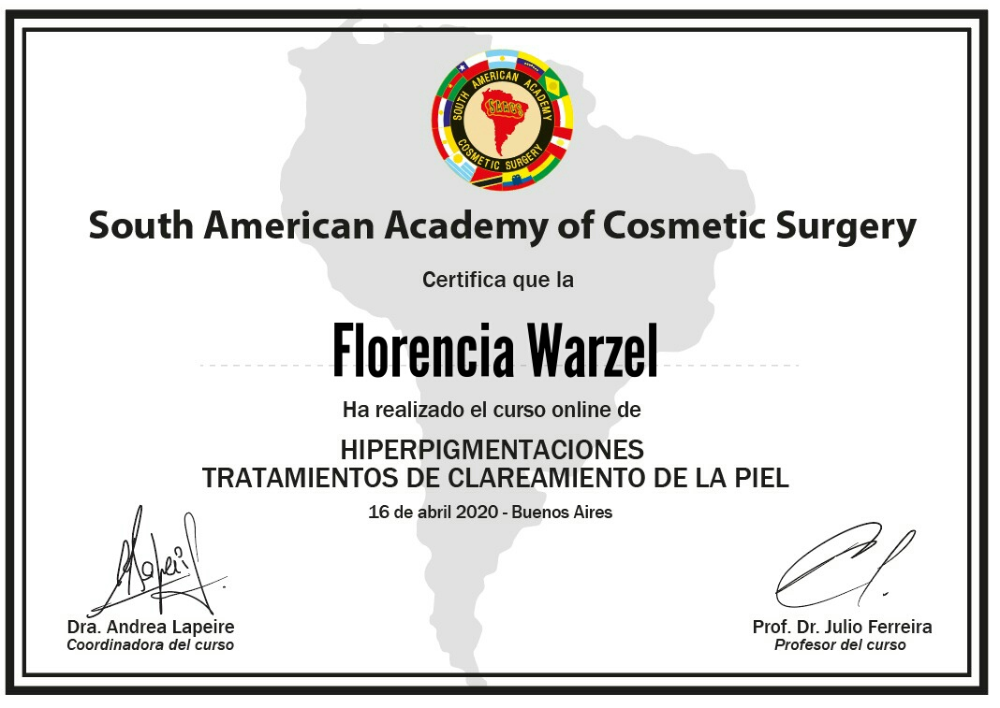
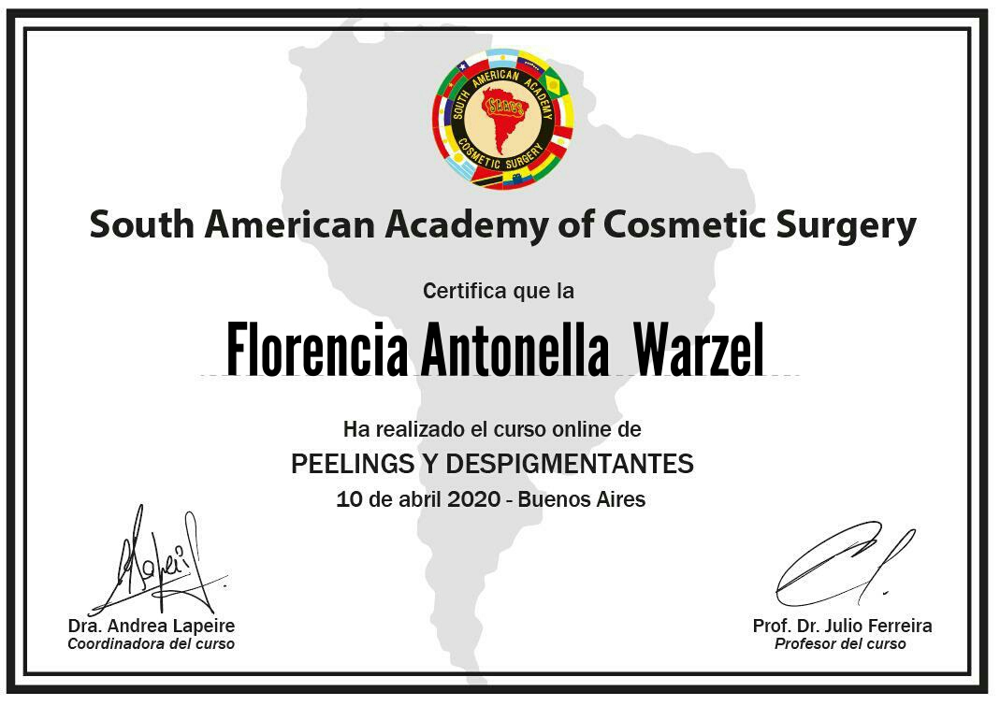
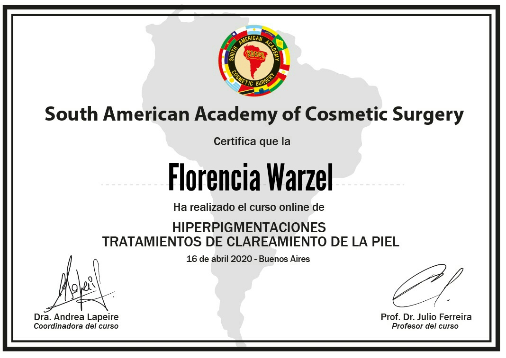
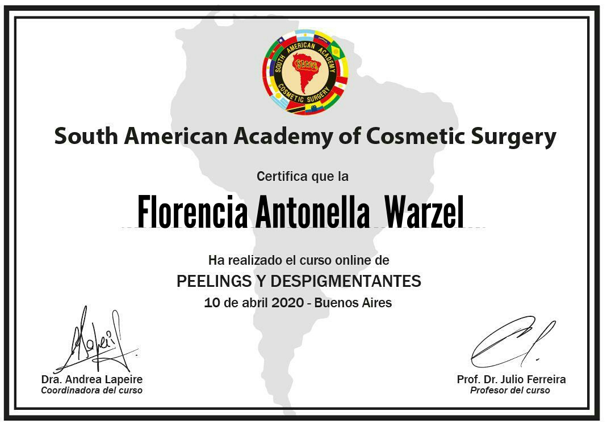
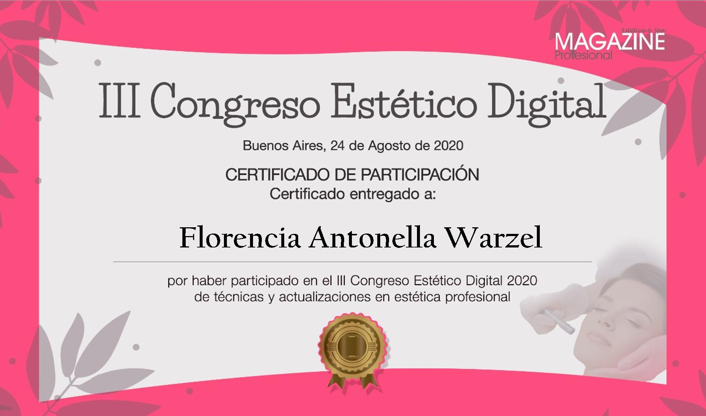
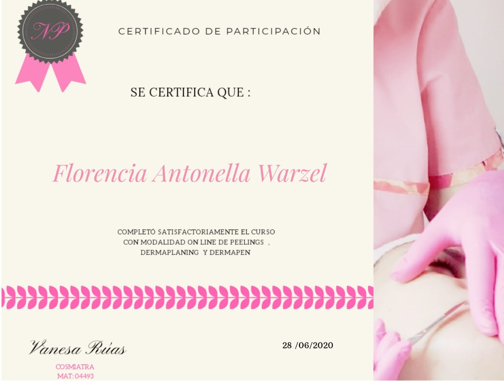
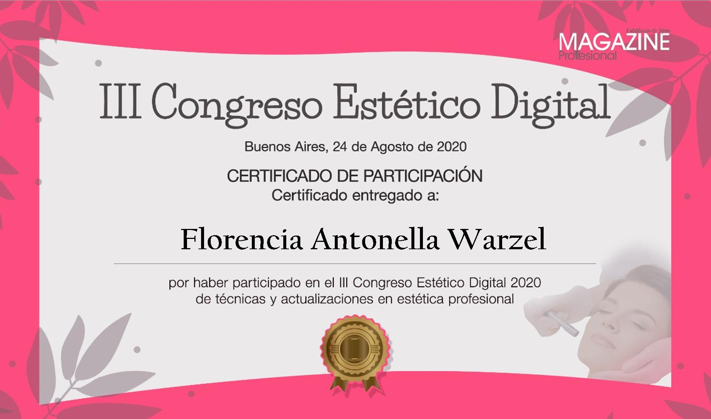
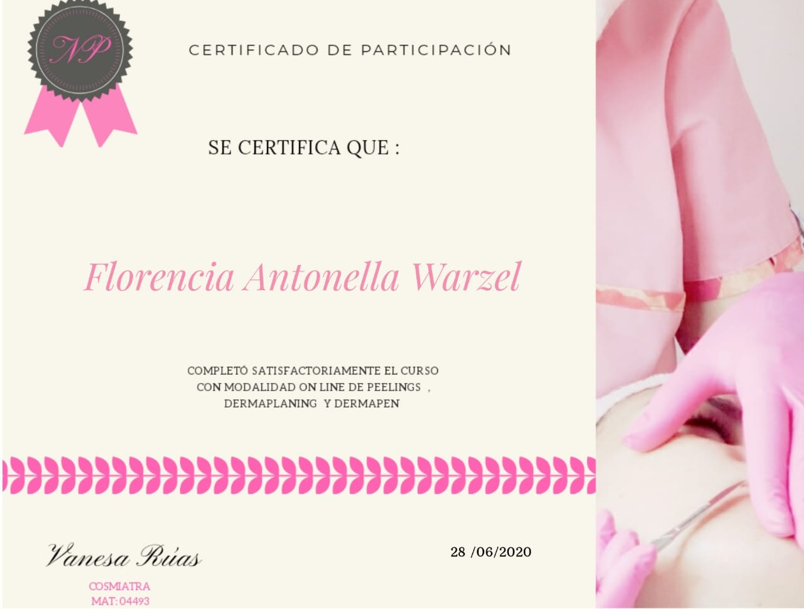

Sobre Ama tu Piel
Un poco de mi...
Hola, mi nombre es Florencia Warzel, creadora de Ama tu Piel, y quiero contarte un poco sobre mi y este
hermoso proyecto.
Soy Cosmetóloga y Cosmiatra, recibida de la Escuela Viviana Bustos. Me capacité en microbiota y
exposomas, hiperpigmentaciones, peelings, despigmentantes, técnicas de Dermapen y Dermaplaning.
¡Y la verdad que el mundo de la piel y sus cuidados es maravilloso y muy amplio! y como dicen, es un
camino de ida...
Ama tu Piel nace de querer aportar desde mis prácticas y saberes, la ayuda necesaria para la salud de la piel de cada persona, ya que cada piel es única y es la que nos protege de todo lo que nos rodea, ¿y qué mejor que cuidarla?
Volviendo a que cada persona posee características únicas, en Ama tu Piel realizamos tratamientos acordes a cada biotipo cutáneo, siempre aconsejando desde el lado de la salud y la consciencia, porque no es sólo belleza ni estética. La piel es un órgano, el más grande que conocemos, y debemos tratarlo como se merece, porque hace mucho por nosotros día a día.
 



 


